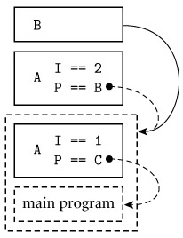
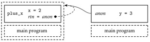

|
|
|
|
3.6 The Binding of Referencing Environments
We have seen in the Section 3.3 how scope rules determine the referencing
environment of a given statement in a program. Static scope rules specify that
the referencing environment depends on the lexical nesting of program blocks in
which names are declared. Dynamic scope rules specify that the referencing
environment depends on the order in which declarations are encountered at run
time. An
additional issue that we have not yet considered arises in languages that allow
one to create a reference to a subroutine, for example by passing it as
a parameter. When should scope rules be applied to such a subroutine: when the
reference is first created, or when the routine is finally called? The answer
is particularly important for languages with dynamic scoping, though we shall
see that it matters even in languages with static scoping.
Example
3.34: Deep and shallow binding
|
|
A dynamic scoping example appears in Figure
3.14. Procedure print_selected_records is assumed to be a general-purpose
routine that knows how to traverse the records in a database, regardless of
whether they represent people, sprockets, or salads. It takes as parameters a
database, a predicate to make print/don't print decisions,
and a subroutine that knows how to format the data in the records of this
particular database. In Section 3.3.6 we hypothesized a print_integer library
routine that would print in any of several bases, depending on the value of a
nonlocal variable print_base. Here we have hypothesized in a similar fashion
that print_person uses the value of nonlocal variable line_length to calculate
the number and width of columns in its output. In a language with dynamic
scoping, it is natural for procedure print_selected_records to declare and
initialize this variable locally, knowing that code inside print_routine will
pick it up if needed. For this coding technique to work, the referencing
environment of print_routine must not be created until the routine is actually
called by print_selected_records. This late binding of the referencing
environment of a subroutine that has been passed as a parameter is known as shallow
binding. It is usually the default in languages with dynamic scoping.
|
|
…
age : integer
…
threshold : integer
people : database
function older_than_threshold(p : person) : boolean
return
p.age ≥ threshold
procedure print_person(p : person)
-- Call
appropriate I/O routines to print record on standard output.
-- Make
use of nonlocal variable line_length to format data in columns.
…
procedure print_selected_records(db : database;
predicate, print_routine : procedure)
line_length : integer
if
device_type(stdout) = terminal
line_length := 80
else
-- Standard output is a file or printer.
line_length := 132
foreach
record r in db
-- Iterating over these may actually be
-- a lot more complicated than a 'for' loop.
if predicate(r)
print_routine(r)
-- main program
…
threshold := 35
print_selected_records(people, older_than_threshold,
print_person)
|
|
Figure 3.14: Program
to illustrate the importance of binding rules. One might argue that deep binding
is appropriate for the environment of function older_than_threshold (for access
to threshold), while shallow binding is appropriate for the environment of
procedure print_person (for access to line_length).
For function older_than_threshold, by contrast, shallow
binding may not work well. If, for example, procedure print_selected_records
happens to have a local variable named threshold, then the variable set by the
main program to influence the behavior of older_than_threshold will not be
visible when the function is finally called, and the predicate will be unlikely
to work correctly. In such a situation, the code that originally passes the
function as a parameter has a particular referencing environment (the current
one) in mind; it does not want the routine to be called in any other
environment. It therefore makes sense to bind the environment at the time the
routine is first passed as a parameter, and then restore that environment when
the routine is finally called. This early binding of the referencing
environment is known as deep binding. The need for deep binding is
sometimes referred to as the funarg problem in Lisp.
|
|
On the CD Deep binding is implemented by creating an explicit
representation of a referencing environment (generally the one in which the subroutine
would execute if called at the present time) and bundling it together with a
reference to the subroutine. The bundle as a whole is referred to as a closure.
Usually the subroutine itself can be represented in the closure by a pointer to
its code. In a language with dynamic scoping, the representation of the
referencing environment depends on whether the language implementation uses an
association list or a central reference table for run-time lookup of names; we
consider these alternatives at the end of Section 3.4.2.
Although shallow binding is usually the default in languages
with dynamic scoping, deep binding may be available as an option. In early
dialects of Lisp, for example, the built-in primitive function takes a function as its argument and returns a closure
whose referencing environment is the one in which the function would execute if
called at the present time. This closure can then be passed as a parameter to
another function. If and when it is eventually called, it will execute in the
saved environment. (Closures work slightly differently from "bare"
functions in
most Lisp dialects: they must be called by passing them to the built-in primitives
funcall or apply.)
Deep binding is generally the default in languages with
static (lexical) scoping. At first glance, one might be tempted to think that
the binding time of referencing environments would not matter in languages with
static scoping. After all, the meaning of a statically scoped name depends on
its lexical nesting, not on the flow of execution, and this nesting is the same
whether it is captured at the time a subroutine is passed as a parameter or at
the time the subroutine is called. The catch is that a running program may have
more than one instance of an object that is declared within a recursive
subroutine. A closure in a language with static scoping captures the current
instance of every object, at the time the closure is created. When the
closure's subroutine is called, it will find these captured instances, even if
newer instances have subsequently been created by recursive calls.
Example
3.35: Binding rules with static scoping
|
|
One could imagine combining static scoping with shallow
binding [VF82], but the combination does not seem to make much
sense, and does not appear to have been adopted in any language. Figure
3.15 contains a Pascal program that illustrates the impact of binding rules
in the presence of static scoping. This program prints a 1. With shallow
binding it would print a 2.
program
binding_example(input, output);
procedure
A(I : integer; procedure P);
procedure B;
begin
writeln(I);
end;
begin
(* A *)
if I > 1 then
P
else
A(2,
B);
end;
procedure
C; begin end;
begin
(* main *)
A(1, C);
end.

Figure 3.15: Deep
binding in Pascal.
At right is a conceptual view of the run-time stack. Referencing environments
captured in closures are shown as dashed boxes and arrows. When B is called via formal parameter P, two instances of I exist. Because the closure for P was created in the initial invocation of A, B's static link (solid arrow) points
to the frame of that earlier invocation. B
uses that invocation's instance of I
in its writeln statement, and the output is a 1.
|
|
It should be noted that binding rules matter with static
scoping only when accessing objects that are neither local nor global, but are
defined at some intermediate level of nesting. If an object is local to the currently
executing subroutine, then it does not matter whether the subroutine was called
directly or through a closure; in either case local objects will have been
created when the subroutine started running. If an object is global, there will
never be more than one instance, since the main body of the program is not
recursive. Binding rules are therefore irrelevant in languages like C, which
has no nested subroutines, or Modula-2, which allows only outermost subroutines
to be passed as parameters, thus ensuring that any variable defined outside the
subroutine is global. (Binding rules are also irrelevant in languages like PL/I
and Ada 83, which do not permit subroutines to be passed as parameters at all.)
Suppose then that we have a language with static scoping in
which nested subroutines can be passed as parameters, with deep binding. To
represent a closure for subroutine S, we can simply save a pointer to S's
code together with the static link that S would use (see Figure 3.5) if it were called right now, in the current
environment. When S is finally called, we temporarily restore the saved
static link, rather than creating a new one. When S follows its static
chain to access a nonlocal object, it will find the object instance that was
current at the time the closure was created. This instance may not have the value
it had at the time the closure was created, but its identity, at least, will
reflect the intent of the closure's creator.
3.6.2 First-ClassValues and Unlimited Extent
In general, a value in a programming language is said to
have first-class status if it can be passed as a parameter, returned
from a subroutine, or assigned into a variable.
Simple types such as integers and characters are first-class values in most
programming languages. By contrast, a "second-class" value can be
passed as a parameter, but not returned from a subroutine or assigned into a
variable, and a "third-class" value cannot even be passed as a
parameter. As we shall see in Section 8.3.2, labels are third-class values in most
programming languages, but second-class values in Algol. Subroutines display
the most variation. They are first-class values in all functional programming
languages and most scripting languages. They are also first-class values in C#
and, with some restrictions, in several other imperative languages, including
Fortran, Modula-2 and -3, Ada 95, C, and C++. [11]
They are second-class values in most other imperative languages, and
third-class values in Ada 83.
Example
3.36: Returning a first-class subroutine in Scheme
|
|
Our discussion of binding so far has considered only
second-class subroutines. First-class subroutines in a language with nested
scopes introduce an additional level of complexity: they raise the possibility
that a reference to a subroutine may outlive the
execution of the scope in which that routine was declared. Consider the
following example in Scheme:
1.
(define plus-x (lambda (x)
2. (lambda (y) (+ x y))))
3. ...
4. (let ((f (plus-x 2)))
5. (f 3))
; returns 5
Here the let construct on line 4 declares a new function, f, which is the result of calling plus-x with argument 2. Function plus-x is defined at line 1. It returns the (unnamed) function
declared at line 2. But that function refers to parameter x of plus-x.
When f is called at line 5, its
referencing environment will include the x in plus-x,
despite the fact that plus-x
has already returned (see Figure
3.16). Somehow we must ensure that x remains available.

Figure 3.16: The
need for unlimited extent.
When function plus_x is called in Example
3.36, it returns (left side of the figure) a closure containing an
anonymous function. The referencing environment of that function encompasses
both plus_x and main―including
the local variables of plus_x itself. When the anonymous function
is subsequently called (right side of the figure), it must be able to access
variables in the closure's environment―in particular, the x inside plus_x.
|
|
If local objects were destroyed (and their space reclaimed)
at the end of each scope's execution, then the referencing environment captured
in a long-lived closure might become full of dangling references. To avoid this
problem, most functional languages specify that local objects have unlimited
extent: their lifetimes continue indefinitely. Their space can be reclaimed
only when the garbage collection system is able to prove that they will never
be used again. Local objects (other than own/static
variables) in most imperative languages have limited extent: they are
destroyed at the end of their scope's execution. (C# and Smalltalk are
exceptions to the rule, as are most scripting languages.) Space for local
objects with limited extent can be allocated on a stack. Space for local
objects with unlimited extent must generally be allocated on a heap.
Given the desire to maintain stack-based allocation for the
local variables of subroutines, imperative languages with first-class
subroutines must generally adopt alternative mechanisms to avoid the dangling
reference problem for closures. C, C++, and (pre-Fortran 90) Fortran, of course,
do not have nested subroutines. Modula-2 allows references to be created only
to outermost subroutines (outermost routines are first-class values; nested
routines are third-class values). Modula-3 allows nested subroutines to be passed as
parameters, but only outermost routines to be returned or stored in variables
(outermost routines are first-class values; nested routines are second-class
values). Ada 95 allows a nested routine to be returned, but only if the scope
in which it was declared is the same as, or larger than, the scope of the
declared return type. This containment rule, while more conservative than
strictly necessary (it forbids the Ada equivalent of Figure
3.15), makes it impossible to propagate a subroutine reference to a portion
of the program in which the routine's referencing environment is not active.
Example
3.37: An object closure in Java
|
|
As noted in Section
3.6.1, the referencing environment in a closure will be nontrivial only
when passing a nested subroutine. This means that the implementation of
first-class subroutines is trivial in a language without nested subroutines. At
the same time, it means that a programmer working in such a language is missing
a useful feature: the ability to pass a subroutine with context. In
object-oriented languages, there is an alternative way to achieve a similar
effect: we can encapsulate our subroutine as a method of a simple object, and
let the object's fields hold context for the method. In Java we might write the
equivalent of Example
3.36 as follows.
interface
IntFunc {
public int call(int i);
}
class
PlusX implements IntFunc {
final int x;
PlusX(int n) { x = n; }
public
int call(int i) { return i + x; }
}
...
IntFunc
f = new PlusX(2);
System.out.println(f.call(3)); // prints 5
Here the interface IntFunc defines a static type for objects enclosing a function from
integers to integers. Class PlusX is a concrete implementation of this type, and can be
instantiated for any constant x. Where the Scheme code in Example
3.36 captured x in
the subroutine closure returned by (plus-x 2), the Java code here captures x in the object closure returned by new
PlusX(2).
Design & Implementation
On the CD Binding mechanisms and the notion of extent are
closely tied to implementation issues. A-lists make it easy to build closures (Section 3.4.2), but so do the non-nested subroutines of C
and the rule against passing nonglobal subroutines as parameters in Modula-2.
In a similar vein, the lack of first-class subroutines in most imperative
languages reflects in large part the desire to avoid heap allocation, which
would be needed for local variables with unlimited extent.
|
|
|
|
Example
3.38: Function objects in C++
|
|
An object that plays the role of a function and its
referencing environment may variously be called an object closure, a function
object, or a functor. (This is unrelated to use of the term functor
in Prolog.) Object closures are sufficiently important that some languages
support them with special syntax. In C++, an object of a class that overrides operator() can be called as if it were a function:
class
int_func {
public:
virtual int operator()(int
i) = 0;
};
class
plus_x : public int_func {
const int x;
public:
plus_x(int n) : x(n) { }
virtual
int operator()(int i) { return i + x; }
};
...
plus_x f(2);
cout << f(3) <<
"\n";
// prints 5
Object f could also be passed to any function that expected a
parameter of class int_func.
|
|
|
|
In C#, a first-class subroutine is an instance of a delegate
type:
delegate
int IntFunc(int i);
This type can be instantiated for any subroutine that matches
the specified argument and return types. That subroutine may be static, or it
may be a method of some object:
static
int Plus2(int i) { return i + 2; }
...
IntFunc
f = new IntFunc(Plus2);
Console.WriteLine(f(3));
// prints 5
class
PlusX {
int x;
public PlusX(int n) { x = n;
}
public int call(int i) {
return i + x; }
}
...
IntFunc
g = new IntFunc(new PlusX(2).call);
Console.WriteLine(g(3));
// prints 5
Here g is
roughly equivalent to the C++ code of Example
3.38.
|
|
Example 3.40: Delegates
and unlimited extent
|
|
Remarkably, though C# does not permit subroutines to nest in
the general case, version 2 of the language allows delegates to be instantiated
in-line from anonymous (unnamed) methods. These allow us to mimic the
code of Example
3.36:
static
IntFunc PlusY(int y) {
return delegate(int i) {
return i + y; };
}
...
IntFunc
h = PlusY(2);
Here y has
unlimited extent! The compiler arranges to allocate it in the heap, and to
refer to it indirectly through a hidden pointer, included in the closure. This
implementation incurs the cost of dynamic storage allocation (and eventual
garbage collection) only when it is needed; local variables remain in the stack
in the common case.
C# 3.0 provides an alternative lambda expression
notation for anonymous methods. This notation is particularly convenient for
functions whose bodies can be written as a single expression. The (one-line)
body of PlusY
above could be replaced with
return
i => i + y;
Anonymous delegates are heavily used for event handling
in C# programs; we will see examples in Section 8.7.2.
|
|
[11]Some authors would say that first-class status requires
anonymous function definitions―lambda expressions―that can be embedded in other
expressions. C#, most scripting languages, and all functional languages meet
this requirement, but most imperative languages do not.